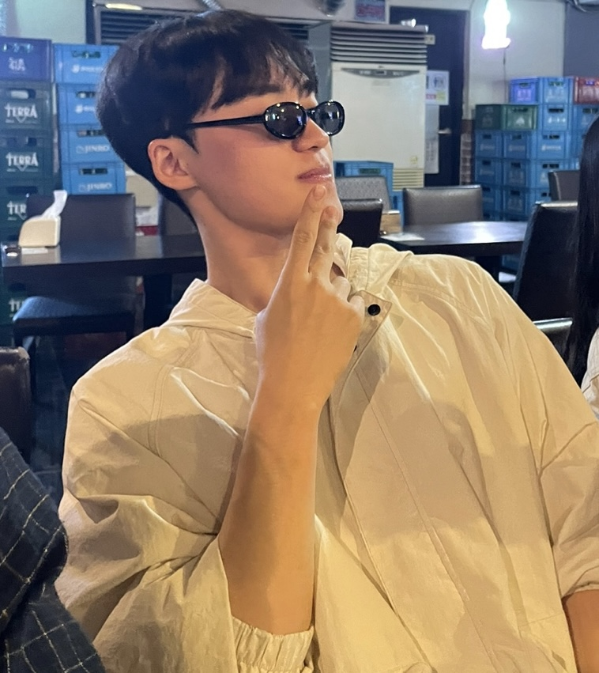

| BGM |
|---|
MY NAME IS |
|---|
|  |
LEE SU KWANG |
| 이름: | 이수광 |
|---|---|
| 생년월일: | 2002.02.12 , 말띠 |
| 대학교: | 가천대학교 컴공 22학번 |
| 전화번호: | 010-2607-xxxx |
| 메일: | coptony212@gachon.ac.kr |
안녕하세요! 자기소개 페이지를 방문해주셔서 감사드립니다!
저의 MBTI는 ESFP로, 사교적이고 활동적이며 수용력이 강하고, 친절하며 낙천적인
성격을 가지고 있어요.
이 자기소개 페이지는 화면을 사이에 두고 있지만,
이걸 본 누군가와 친구가 될 수 있다면 참 좋겠다는 생각으로 만들었어요.
저를 조금 더 알아보는 시간이 되었으면 해요!
사람마다 하나쯤은 취미가 있잖아요?
저도 딱히 "취미!"라고 말하긴 조심스럽지만,
요즘 특히 좋아하는 것들이 있어요.
여행을 다니면서 새로운 경험을 하는 것도 좋고,
연극 보는 시간도 정말 좋아해요.
그리고 헬스도 참 좋아한답니다.
아래 사진들과 함께 저의 소소한 취미들을 공유해볼게요!
앞에서 헬스를 좋아한다고 했는데, 운동을 하다 보니 역시 단백질 섭취가 중요하더라고요.
그런데 ‘식단’이라고 해서 맛 없게만 먹고 싶진 않았어요.
그래서 제가 찾은 건, 단백질도 챙기면서
맛도 포기하지 않는 한국인 입맛 저격 레시피예요!
누구나 쉽게 만들 수 있는 메뉴니까,
같이 즐겨보면 좋겠어요 😊